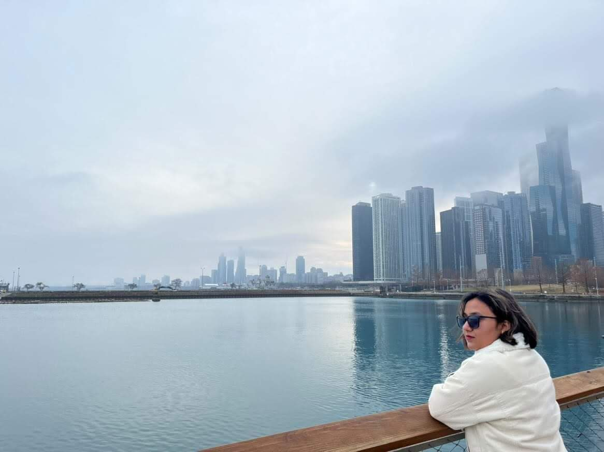

Anamika Verma
Software QA Engineer/ Automation Enthusiast
I'm a graduate student at Northeastern University and am pursuing a master of science in information systems.

I have 3+ years of work experience as a Quality engineering senior analyst at Accenture and as an Analyst at Wipro and have a strong background in manual and automation testing. My bachelors has provided me with a solid foundation in operating systems, algorithms, software engineering, data structures, databases, machine learning, and cloud computing. I am a motivated and detail-oriented individual who enjoys working collaboratively with others to solve complex problems. I am constantly seeking new challenges and opportunities to expand my skills and knowledge in the field of Information Systems.